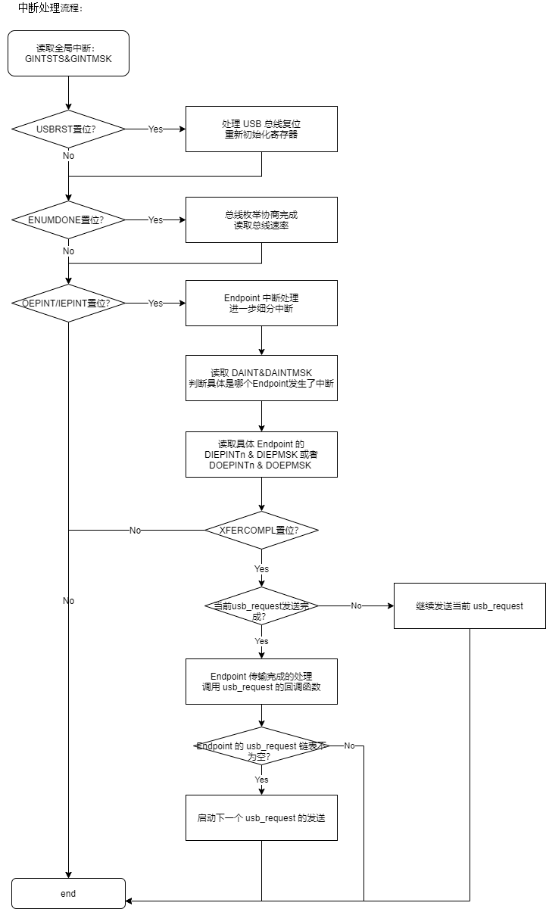
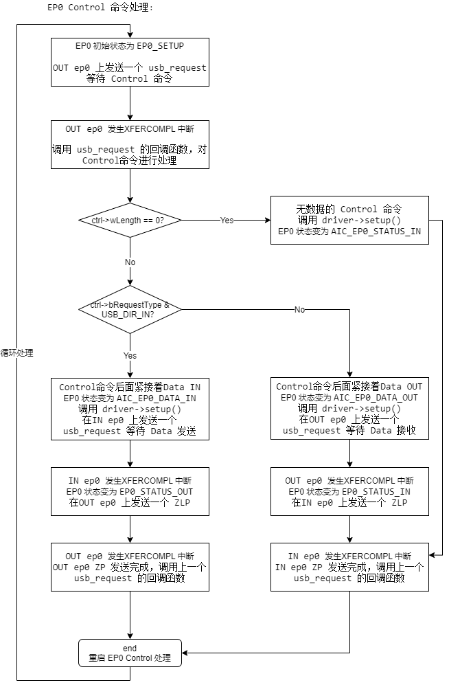

7.12.6. USB Device 子系统代码架构¶

整个 USB 系统的通讯模型如上图所示，Device 框架见右侧彩图部分。
7.12.6.1. USB Device Controller Layer¶
上述软件栈的最底层是 UDC (USB Device Controller)，UDC 层最主要的作用是提供一个 endpoint 资源池，负责处理 endpoint 层级的数据收发。
7.12.6.1.1. AIC USB Device Controller¶
ArtinChip UDC 在硬件层面实现了以下功能：
7.12.6.1.1.1. Data Mode¶
UDC 实现的一项主要工作是数据搬移：
UDC 发送时，数据先从内存 Memory 搬移到 UDC 的内部 FIFO 当中，然后由 UDC 发送到 USB 物理线路上。
UDC 接收时，数据先从 USB 物理线路接收到 UDC 的内部 FIFO 当中，然后再从 FIFO 拷贝到 内存 Memory 当中。
对于 FIFO 和 Memory 之间的数据搬移工作，当前 UDC 支持两种方式：
DMA Mode。
由 UDC 内部的 DMA 模块来承担数据搬移工作，只要使用寄存器配置好 FIFO 的分配，以及在寄存器中配置好 DMA 的其实地址，DMA 会完成数据的搬移。
Slave Mode。
也可以不使用 DMA 而直接使用 CPU 来搬移，这种方式非常消耗 CPU 的带宽，CPU 被简单重复的数据拷贝拖住不能做其他的事情。这种方式一般用于 Debug 模式。
7.12.6.1.1.2. Endpoint FIFO Mode¶
不同的 UDC 中 Endpoint 对 FIFO 的使用有多种模式，当前 UDC 选用的是 Shared Transmit FIFO 模式。在 Shared Transmit FIFO 模式中， Endpoint 对 FIFO 使用模式如下：
所有的
non-periodic IN endpoints共享一个transmit FIFO。non-periodic endpoints包括isochronous transfers和interrupt transfers。每一个
periodic IN endpoint独立拥有一个transmit FIFO。periodic endpoints包括bulk transfers和control transfers。所有的
OUT endpoints共享一个receive FIFO。
7.12.6.1.1.3. Endpoint Resource¶
USB 协议定义一个 Device 最多可以实现 16 个 IN endpoint + 16 个 OUT endpoint。当前 UDC 实现了 5 个 IN endpoint + 5 个 OUT endpoint，除了 endpoint 0 IN/OUT 被系统默认使用，剩下的可以被驱动动态分配使用。
如上一节所描述，UDC 是 Shared Transmit FIFO 模式， periodic IN endpoint 需要拥有一个独立的 transmit FIFO。当前 UDC 拥有两个这样的 transmit FIFO 资源，供驱动动态分配。
如果驱动创建一个 periodic IN endpoint 它分配到了第一个 endpoint 资源，但是没有分配到 transmit FIFO 资源，也会创建失败。
7.12.6.1.1.4. Calculating FIFO Size¶

由上几节的描述可以看到，UDC 有多个模块需要使用内部 FIFO。包括：
OUT endpoints RxFIFO
IN non-periodic endpoints TxFIFO
IN periodic endpoints TxFIFO
DMA
UDC 内部 FIFO 总大小是固定的，那么怎么样来分配 FIFO 空间给这些模块呢？ UDC 提供了以下计算公式：
Receive FIFO RAM allocation
RAM for SETUP Packets: 4 * n + 6 locations in Scatter/Gather DMA mode and 5 * n+6 locations in Slave and Buffer DMA mode must be reserved in the RxFIFO to receive up to n SETUP packets on control endpoints, where n is the number of control endpoints the device core supports. The core does not use these locations, which are Reserved for SETUP packets, to write any other data.// Setup 包的保留 RAM 空间(DMA 模式)： 5*n + 6 locations，n 为 control endpoints 的个数。该部分只为 SETUP 包保留，不会写入其他数据。One location for Global OUT NAK// Global OUT NAK: 1 locationStatus information is written to the FIFO along with each received packet. Therefore, a minimum space of (Largest Packet Size / 4) + 1 must be allotted to receive packets. If a high-bandwidth endpoint is enabled, or multiple isochronous endpoints are enabled, then at least two (Largest Packet Size / 4) + 1 spaces must be allotted to receive back-to-back packets. Typically, two (Largest Packet Size / 4) + 1 spaces are recommended so that when the previous packet is being transferred to AHB, the USB can receive the subsequent packet. If AHB latency is high, you must allocate enough space to receive multiple packets. This is critical to prevent dropping of any isochronous packets.// 包接收空间： 最少 (Largest Packet Size / 4) + 1 spaces，如果空间充裕使用 two (Largest Packet Size / 4) + 1 spacesAlong with each endpoint’s last packet, transfer complete status information is also pushed to the FIFO. Typically, one location for each OUT endpoint is recommended.// 对于每个 OUT endpoint ，最后一个包需要一个位置存放 transfer complete status informationAn additional endpoint for each EPDisable is also required.// 对于每个 OUT endpoint ，还需要一个位置存放 EPDisable计算公式：Device RxFIFO = (5 * number of control endpoints + 8) + ((largest USB packet used / 4) + 1 for status information) + (2 * number of OUT endpoints) + 1 for Global NAK
Transmit FIFO RAM allocation
The RAM size for the Periodic Transmit FIFO must equal the maximum amount of data that can be transmitted in a single microframe. The core does not use any data RAM allocated over this requirement, and when data RAM allocated is less than this requirement, the core can malfunction.// Periodic Transmit FIFO RAM大小必须等于在单个微帧中可以传输的最大数据量。核心不使用任何分配给这个需求的数据RAM，当分配的数据RAM小于这个需求时，核心可能会发生故障。The minimum amount of RAM required for the Non-periodic Transmit FIFO is the largest maximum packet size among all supported non-periodic IN endpoints.// Non-periodic Transmit FIFO 最小RAM数量是所有支持的非周期IN端点中最大的包大小。More space allocated in the Transmit Non-periodic FIFO results in better performance on the USB and can hide AHB latencies. Typically, two Largest Packet Sizes’ worth of space is recommended, so that when the current packet is under transfer to the USB, the AHB can get the next packet. If the AHB latency is large, then you must allocate enough space to buffer multiple packets.// Transmit Non-periodic FIFO 中分配更多的空间，可以在USB上获得更好的性能，并可以隐藏AHB延迟。通常，建议使用两个最大包大小的空间，以便当当前包正在传输到USB时，AHB可以获得下一个包。如果AHB延迟较大，则必须分配足够的空间来缓冲多个包。It is assumed that i number of periodic FIFOs is implemented in Device mode.// i 是 periodic FIFOs 的个数。计算公式：Non-Periodic TxFIFO = largest non-periodic USB packet used / 4Periodic Endpoint-Specific TxFIFOs= largest periodic USB packet used for an endpoint / 4
Internal Register Storage Space Allocation
When operating in Internal DMA mode, the core stores the Endpoint DMA address register (DI/OEPDMA) in the SPRAM. One location must be allocated for each endpoint.// 当在内部DMA模式下运行时，核心将端点DMA地址寄存器(DI/OEPDMA)存储在SPRAM中。必须为每个端点分配一个位置。For example, if an endpoint is bidirectional, then two locations must be allocated. If an endpoint is IN or OUT, then only one location must be allocated.// 例如，如果一个端点是双向的，那么必须分配两个位置。如果端点是IN或OUT，则必须只分配一个位置。
Example
The MPS is 1,024 bytes for a periodic USB packet and 512 bytes for a non-periodic USB packet.
There are three OUT endpoints, three IN endpoints, one control endpoint.
Device RxFIFO = (5 * 1 + 8) + ((1,024 / 4) +1) + (2 * 4) + 1 = 279
Non-Periodic TxFIFO = (512 / 4) = 128
Device Periodic TxFIFO:
EP 1 = (1,024 / 4) = 256
EP 2 = (1,024 / 4) = 256
EP 3 = (1,024 / 4) = 256
当前 UDC
The MPS is 1,024 bytes for a periodic USB packet and 1024 bytes for a non-periodic USB packet.
There are 4 OUT endpoints, 4 IN endpoints, 1 control endpoint.
Device RxFIFO = (5 * 1 + 8) + ((1,024 / 4) +1) + (2 * 5) + 1 = 281 = 0x119
Non-Periodic TxFIFO = (1024 / 4) = 256 = 0x100
Device Periodic TxFIFO:
EP 1 = (1,024 / 4) = 256 = 0x100
EP 2 = remain space = 0x3F6 - 0x119 - 0x100 - 0x100 = 0xDD
Internal Register Storage Space = 5 * 2 = 10 = 0xA
或者：
Device RxFIFO = (5 * 1 + 8) + ((1,024 / 4) +1) + (2 * 5) + 1 = 281 = 0x119
Non-Periodic TxFIFO = (1024 / 4) = 256 = 0x200
Device Periodic TxFIFO:
EP 1 = (0x3F6 - 0x119 - 0x200) / 2 = 0x6E
EP 2 = (0x3F6 - 0x119 - 0x200) / 2 = 0x6E
Internal Register Storage Space = 5 * 2 = 10 = 0xA
7.12.6.1.1.5. FIFO Mapping¶

由上几节可知对一个端点 Endpoint 来说，它对应的 FIFO 是动态分配的。在 DMA 模式下，一旦初始化时配置完成就不用再去管 Endpoint FIFO 的地址。但是对 Slave 模式来说，在数据收发过程中需要 CPU 访问对应 FIFO 空间。
为了方便 CPU 对 Endpoint FIFO 的访问，UDC 把 Endpoint FIFO 映射到了固定地址。其中读操作会映射到 OUT Endpoint FIFO，写操作会映射到 IN Endpoint FIFO。
7.12.6.1.1.6. Interrupt Cascade¶
由于 UDC 的中断状态较多，所以分成 3 级级联：
layer1:
GINTSTS&GINTMSK。全局中断，每一 bit 表示一个全局中断状态。其中：OEPInt表示有Out Endpoint中断发生 ，IEPInt表示有In Endpoint中断发生。layer2:
DAINT&DAINTMSK。Endpoint 中断，每一 bit 表示一个 Endpoint 发生了中断。layer3:
DOEPINTn&DOEPMSK，DIEPINTn&DIEPMSK。Endpoint 中断细节，每一个 Endpoint 拥有一组这样的寄存器。 寄存器中的每一 bit 代表某个 Endpoint 的某种中断状态。
7.12.6.1.1.7. Data Transfer¶
UDC 内部的数据收发流程如上图所示。主要的工作就是根据 USB 接收到的读写指令，把数据在 FIFO 和 Memory 之间进行搬移。具体分为几种情况：
OUT Endpoint。所有 OUT Endpoint 的线路数据会接收到一个统一的
Rx FIFO当中，然后根据接收数据的具体 Endpoint配置的 Memory 地址和长度，DMA 把数据从 FIFO 搬移到对应 Memory 当中，最后产生中断。IN Non-period Endpoint。所有 IN Non-period Endpoint 共享一个统一的
Tx Non-period FIFO，根据Endpoint配置的 Memory 地址和长度，DMA 把数据从 Memory 搬移到统一的 FIFO 当中，发送到线路上后产生中断。IN Non-period Endpoint 需要配置Next Endpoint指针，这样 DMA处理完一个 Endpoint 的数据后才知道下一个需要处理的 Endpoint。IN Period Endpoint。每一个 IN Period Endpoint 拥有自己独立的 FIFO，根据Endpoint配置的 Memory 地址和长度，DMA 把数据从 Memory 搬移到对应的 FIFO 当中，发送到线路上后产生中断。
7.12.6.1.2. AIC UDC Driver¶
UDC Driver 在需要完成的工作有两点：
把 UDC 硬件注册成标准的 Gadget Device，以便提供标准的 Gadget API 给 Gadget Function 驱动来使用。
提供 endpoint 资源池，处理 endpoint 层级的数据收发。
需要处理部分 Endpoint0 Setup 逻辑。
7.12.6.1.2.2. gadget.ops¶
UDC 驱动需要提供 gadget 设备的操作函数集 gadget.ops。简单定义如下：
static const struct usb_gadget_ops aic_usb_gadget_ops = {
.get_frame = aic_gg_getframe,
.udc_start = aic_gg_udc_start,
.udc_stop = aic_gg_udc_stop,
.pullup = aic_gg_pullup,
.vbus_session = aic_gg_vbus_session,
.vbus_draw = aic_gg_vbus_draw,
};
其中的核心函数为 .udc_start() ，在调用该函数以后 UDC 才真正进入工作状态。其主要流程如下：
7.12.6.1.2.3. ep.ops¶
UDC 驱动需要提供 endpoint 的操作函数集 ep.ops。简单定义如下：
static const struct usb_ep_ops aic_usb_ep_ops = {
.enable = aic_ep_enable,
.disable = aic_ep_disable,
.alloc_request = aic_ep_alloc_request,
.free_request = aic_ep_free_request,
.queue = aic_ep_queue_request,
.dequeue = aic_ep_dequeue_request,
.set_halt = aic_ep_sethalt,
};
其中 .queue() 函数负责接收 Gadget Function 驱动发送下来的 usb_request。其主要流程如下：
7.12.6.1.2.4. Interrupt¶
UDC 驱动主要承担的是数据收发，在上一节收到 usb_request 请求以后，接下来就是等待硬件处理完成产生中断了。中断处理的主要流程如下：

7.12.6.1.2.5. EP0 Setup¶
UDC 驱动还有一项重要工作就是负责 EP0 Control 状态机的处理。USB ep0 上的 Control Transfer 处理分为3个阶段： Setup Stage 、 Data In/Out Stage 、 Status In/Out Stage 。具体对应以下 5 种状态：
/* Gadget ep0 states */
enum ep0_state {
EP0_SETUP,
EP0_DATA_IN,
EP0_DATA_OUT,
EP0_STATUS_IN,
EP0_STATUS_OUT,
};
这几种状态之间的转换流程如下所示：

7.12.6.2. USB Device Layer¶
Linux 使用了一个 Gadget 的概念来组织 USB Device。
Gadget Layer 层把 UDC 提供的 endpoint 封装成标准的 Gadget Device，提供统一的向上接口。
Gadget Driver 又把各式各样的 Function 和 Gadget Device 链接起来。
7.12.6.2.1. Gadget Bus¶
Gadget Layer 层没有定义一个标准的 Bus 总线，而是自定义了两条链表来分别存储 Device 和 Driver：
type |
list |
escript |
|---|---|---|
Device |
udc_list |
所有Device全集 |
Driver |
gadget_driver_pending_list |
只包含没有适配Device的Driver |
它们的使用场景如下：
在 Gadget Device 创建时，首先把 Device 加入到
udc_list链表，然后尝试和gadget_driver_pending_list链表中的 Driver 进行 match():
usb_add_gadget_udc() → usb_add_gadget_udc_release() → usb_add_gadget():
int usb_add_gadget(struct usb_gadget *gadget)
{
/* (1) 将 device 加入全局链表 */
list_add_tail(&udc->list, &udc_list);
/* pick up one of pending gadget drivers */
/* (2) 尝试 match gadget 的 device 和 driver */
ret = check_pending_gadget_drivers(udc);
if (ret)
goto err_del_udc;
mutex_unlock(&udc_lock);
}
↓
static int check_pending_gadget_drivers(struct usb_udc *udc)
{
struct usb_gadget_driver *driver;
int ret = 0;
/* (2.1) 遍历 `gadget_driver_pending_list` 链表中的 Driver，和 Device 进行 match()
且一个 Driver 只能 match 一个 Device，Driver match 成功后会从链表删除
*/
list_for_each_entry(driver, &gadget_driver_pending_list, pending)
if (!driver->udc_name || strcmp(driver->udc_name,
dev_name(&udc->dev)) == 0) {
/* (2.2) Match 成功，对 Device 和 Driver 进行 bind() */
ret = udc_bind_to_driver(udc, driver);
if (ret != -EPROBE_DEFER)
/* (2.3) Driver Match 成功后，从pending链表删除 */
list_del_init(&driver->pending);
break;
}
return ret;
}
在 Gadget Driver 创建时，首先尝试和
udc_list链表中的 Device 进行 match()，match() 不成功则把 Driver 加入到gadget_driver_pending_list链表中:
gadget_dev_desc_UDC_store() → usb_gadget_probe_driver():
int usb_gadget_probe_driver(struct usb_gadget_driver *driver)
{
struct usb_udc *udc = NULL;
int ret = -ENODEV;
if (!driver || !driver->bind || !driver->setup)
return -EINVAL;
mutex_lock(&udc_lock);
/* (1.1) 如果 Driver 有 udc_name，尝试和 udc_list 链表中 Device 的 Name 进行 match() */
if (driver->udc_name) {
list_for_each_entry(udc, &udc_list, list) {
ret = strcmp(driver->udc_name, dev_name(&udc->dev));
if (!ret)
break;
}
if (ret)
ret = -ENODEV;
else if (udc->driver)
ret = -EBUSY;
else
goto found;
/* (1.2) 如果 Driver 没有 udc_name，尝试适配 udc_list 链表中第一个没有适配的 Device */
} else {
list_for_each_entry(udc, &udc_list, list) {
/* For now we take the first one */
if (!udc->driver)
goto found;
}
}
if (!driver->match_existing_only) {
/* (2) 如果没有 match() 成功，则把 Driver 加入到 pending 链表 */
list_add_tail(&driver->pending, &gadget_driver_pending_list);
pr_info("udc-core: couldn't find an available UDC - added [%s] to list of pending drivers\n",
driver->function);
ret = 0;
}
mutex_unlock(&udc_lock);
if (ret)
pr_warn("udc-core: couldn't find an available UDC or it's busy\n");
return ret;
found:
/* (3) 如果 Match 成功，对 Device 和 Driver 进行 bind() */
ret = udc_bind_to_driver(udc, driver);
mutex_unlock(&udc_lock);
return ret;
}
在 Device 和 Driver Match 成功时的 bind() 动作：
static int udc_bind_to_driver(struct usb_udc *udc, struct usb_gadget_driver *driver)
{
int ret;
dev_dbg(&udc->dev, "registering UDC driver [%s]\n",
driver->function);
/* (1) 数据成员的赋值 */
udc->driver = driver;
udc->dev.driver = &driver->driver;
udc->gadget->dev.driver = &driver->driver;
usb_gadget_udc_set_speed(udc, driver->max_speed);
/* (2) 调用 Gadget Driver 的 bind() 函数 */
ret = driver->bind(udc->gadget, driver);
if (ret)
goto err1;
/* (3) 调用 Gadget Device 的 start() 函数
udc->gadget->ops->udc_start(udc->gadget, udc->driver);
*/
ret = usb_gadget_udc_start(udc);
if (ret) {
driver->unbind(udc->gadget);
goto err1;
}
/* (4) 调用 Gadget Device 的 pullup() 函数
gadget->ops->pullup(gadget, 1/0);
*/
usb_udc_connect_control(udc);
kobject_uevent(&udc->dev.kobj, KOBJ_CHANGE);
return 0;
}
注意：这里和一般的 Device 和 Driver 的适配规则有些不一样。一般的规则是一个 Dirver 可以适配多个 Device，而一个 Device 只能适配一个 Driver。而这里的规则是一个 Gadget Device 只能适配一个 Gadget Driver，而一个 Gadget Driver 只能适配一个 Gadget Device。 Gadget Driver 代表的是一个 Composite Device。
7.12.6.2.2. Gadget Device¶
上一节说过 Gadget Device 由 UDC Driver 创建。
dwc2_driver_probe() → usb_add_gadget_udc() → usb_add_gadget_udc_release() → usb_add_gadget()
Gadget Device 的主要作用是提供了 Endpoint 资源，供 Function Layer 使用标准的 Gadget API 来进行访问。
7.12.6.2.2.1. Endpoint Alloc¶
UDC Driver 在调用 usb_add_gadget_udc() 注册 Gadget Device 之前，初始化了 Gadget 的 Endpoint 资源链表：
dwc2_driver_probe() → dwc2_gadget_init():
int dwc2_gadget_init(struct dwc2_hsotg *hsotg)
{
/* (1) 初始化 Gadget Device 的 Endpoint 资源链表为空 */
INIT_LIST_HEAD(&hsotg->gadget.ep_list);
hsotg->gadget.ep0 = &hsotg->eps_out[0]->ep;
/* initialise the endpoints now the core has been initialised */
/* (2) 初始化 UDC 拥有的 Endpoint，加入到 Gadget Device 的 Endpoint 资源链表中 */
for (epnum = 0; epnum < hsotg->num_of_eps; epnum++) {
if (hsotg->eps_in[epnum])
dwc2_hsotg_initep(hsotg, hsotg->eps_in[epnum],
epnum, 1);
if (hsotg->eps_out[epnum])
dwc2_hsotg_initep(hsotg, hsotg->eps_out[epnum],
epnum, 0);
}
}
↓
static void dwc2_hsotg_initep(struct dwc2_hsotg *hsotg,
struct dwc2_hsotg_ep *hs_ep,
int epnum,
bool dir_in)
{
INIT_LIST_HEAD(&hs_ep->queue);
INIT_LIST_HEAD(&hs_ep->ep.ep_list);
/* add to the list of endpoints known by the gadget driver */
/* (2.1) UDC 中除了 endpoint0 以外，其他的 endpoint 都加入到Gadget Device 的 Endpoint 资源链表 `gadget.ep_list` 中
endpoint0 的操作由 UDC 驱动自己来处理
*/
if (epnum)
list_add_tail(&hs_ep->ep.ep_list, &hsotg->gadget.ep_list);
/* (2.2) 初始化 endpoint 的结构体成员 */
hs_ep->parent = hsotg;
hs_ep->ep.name = hs_ep->name;
if (hsotg->params.speed == DWC2_SPEED_PARAM_LOW)
usb_ep_set_maxpacket_limit(&hs_ep->ep, 8);
else
usb_ep_set_maxpacket_limit(&hs_ep->ep,
epnum ? 1024 : EP0_MPS_LIMIT);
/* (2.3) endpoint 最重要的结构体成员，endpoint 操作函数集
endpoint 的相关操作最后调用到这些函数上
*/
hs_ep->ep.ops = &dwc2_hsotg_ep_ops;
if (epnum == 0) {
hs_ep->ep.caps.type_control = true;
} else {
if (hsotg->params.speed != DWC2_SPEED_PARAM_LOW) {
hs_ep->ep.caps.type_iso = true;
hs_ep->ep.caps.type_bulk = true;
}
hs_ep->ep.caps.type_int = true;
}
if (dir_in)
hs_ep->ep.caps.dir_in = true;
else
hs_ep->ep.caps.dir_out = true;
}
Gadget Device 准备好了 Endpoint 资源链表以后，通过 usb_add_gadget_udc() 注册。这样就可以 Function Layer 就可以通过调用 Gadget Api 来动态分配 Endpoint 了。例如：
static int
acm_bind(struct usb_configuration *c, struct usb_function *f)
{
/* allocate instance-specific endpoints */
/* (1) 从 Gadget Device 中分配一个 in endpoint */
ep = usb_ep_autoconfig(cdev->gadget, &acm_fs_in_desc);
if (!ep)
goto fail;
acm->port.in = ep;
/* (2) 从 Gadget Device 中分配一个 out endpoint */
ep = usb_ep_autoconfig(cdev->gadget, &acm_fs_out_desc);
if (!ep)
goto fail;
acm->port.out = ep;
/* (3) 从 Gadget Device 中分配一个 notify endpoint */
ep = usb_ep_autoconfig(cdev->gadget, &acm_fs_notify_desc);
if (!ep)
goto fail;
acm->notify = ep;
}
其中通过 usb_ep_autoconfig() 函数从 Gadget Device 的 Endpoint 资源链表中分配空闲的 endpoint:
drivers\usb\gadget\function\f_acm.c:
usb_ep_autoconfig() → usb_ep_autoconfig_ss():
struct usb_ep *usb_ep_autoconfig_ss(
struct usb_gadget *gadget,
struct usb_endpoint_descriptor *desc,
struct usb_ss_ep_comp_descriptor *ep_comp
)
{
struct usb_ep *ep;
if (gadget->ops->match_ep) {
ep = gadget->ops->match_ep(gadget, desc, ep_comp);
if (ep)
goto found_ep;
}
/* Second, look at endpoints until an unclaimed one looks usable */
/* (1) 从 Gadget Device 的 Endpoint 资源链表中查找一个空闲的(ep->claimed为空) 且符合要求的 endpoint */
list_for_each_entry (ep, &gadget->ep_list, ep_list) {
if (usb_gadget_ep_match_desc(gadget, ep, desc, ep_comp))
goto found_ep;
}
/* Fail */
return NULL;
found_ep:
...
ep->address = desc->bEndpointAddress;
ep->desc = NULL;
ep->comp_desc = NULL;
/* (2) 设置 endpoint 为已分配 */
ep->claimed = true;
return ep;
}
7.12.6.2.2.2. EndPoint Access¶
Gadget Device 不仅仅为 Gadget Api 提供了分配 endpoint 的支持，还支持对 endpoint 收发数据的底层支持。在上一节的 endpoint 初始化时，就已经设置 endpoint 的操作函数集 dwc2_hsotg_ep_ops ：
dwc2_driver_probe() → dwc2_gadget_init() → dwc2_hsotg_initep():
static void dwc2_hsotg_initep(struct dwc2_hsotg *hsotg,
struct dwc2_hsotg_ep *hs_ep,
int epnum,
bool dir_in)
{
/* (2.3) endpoint 最重要的结构体成员，endpoint 操作函数集
endpoint 的相关操作最后调用到这些函数上
*/
hs_ep->ep.ops = &dwc2_hsotg_ep_ops;
}
↓
static const struct usb_ep_ops dwc2_hsotg_ep_ops = {
.enable = dwc2_hsotg_ep_enable,
.disable = dwc2_hsotg_ep_disable_lock,
.alloc_request = dwc2_hsotg_ep_alloc_request,
.free_request = dwc2_hsotg_ep_free_request,
.queue = dwc2_hsotg_ep_queue_lock,
.dequeue = dwc2_hsotg_ep_dequeue,
.set_halt = dwc2_hsotg_ep_sethalt_lock,
/* note, don't believe we have any call for the fifo routines */
};
Gadget Api 提供了以下接口来操作 endpoint 读写数据。在 Host 侧对 endpoint 进行一次操作请求的数据结构是 struct urb ，而在 Device 侧也有类似的数据结构称为 struct usb_request ，对 endpoint 的数据读写就是围绕 struct usb_request 展开的：
drivers\usb\gadget\function\f_acm.c:
static int acm_cdc_notify(struct f_acm *acm, u8 type, u16 value,
void *data, unsigned length)
{
struct usb_ep *ep = acm->notify;
struct usb_request *req;
struct usb_cdc_notification *notify;
const unsigned len = sizeof(*notify) + length;
void *buf;
int status;
/* (1) 初始化 `struct usb_request` 数据结构 */
req = acm->notify_req;
acm->notify_req = NULL;
acm->pending = false;
req->length = len;
notify = req->buf;
buf = notify + 1;
notify->bmRequestType = USB_DIR_IN | USB_TYPE_CLASS
| USB_RECIP_INTERFACE;
notify->bNotificationType = type;
notify->wValue = cpu_to_le16(value);
notify->wIndex = cpu_to_le16(acm->ctrl_id);
notify->wLength = cpu_to_le16(length);
memcpy(buf, data, length);
/* ep_queue() can complete immediately if it fills the fifo... */
spin_unlock(&acm->lock);
/* (2) 提交 `usb_request` 请求到 endpoint 处理队列中 */
status = usb_ep_queue(ep, req, GFP_ATOMIC);
spin_lock(&acm->lock);
}
其中 usb_ep_queue() 函数就会调用 endpoint 的操作函数集 dwc2_hsotg_ep_ops 中的 .queue 函数：
int usb_ep_queue(struct usb_ep *ep,
struct usb_request *req, gfp_t gfp_flags)
{
int ret = 0;
if (WARN_ON_ONCE(!ep->enabled && ep->address)) {
ret = -ESHUTDOWN;
goto out;
}
/* (1) 实际调用 dwc2_hsotg_ep_queue_lock() */
ret = ep->ops->queue(ep, req, gfp_flags);
out:
trace_usb_ep_queue(ep, req, ret);
return ret;
}
7.12.6.2.2.3. UDC Control¶
Gadget Device 还提供了 UDC 层级的一些操作函数，UDC Driver 在调用 usb_add_gadget_udc() 注册 Gadget Device 之前，初始化了 Gadget 的 操作函数集：
dwc2_driver_probe() → dwc2_gadget_init():
int dwc2_gadget_init(struct dwc2_hsotg *hsotg)
{
hsotg->gadget.max_speed = USB_SPEED_HIGH;
/* (1) 初始化 Gadget Device 的操作函数集 */
hsotg->gadget.ops = &dwc2_hsotg_gadget_ops;
hsotg->gadget.name = dev_name(dev);
hsotg->remote_wakeup_allowed = 0;
}
↓
static const struct usb_gadget_ops dwc2_hsotg_gadget_ops = {
.get_frame = dwc2_hsotg_gadget_getframe,
.set_selfpowered = dwc2_hsotg_set_selfpowered,
.udc_start = dwc2_hsotg_udc_start,
.udc_stop = dwc2_hsotg_udc_stop,
.pullup = dwc2_hsotg_pullup,
.vbus_session = dwc2_hsotg_vbus_session,
.vbus_draw = dwc2_hsotg_vbus_draw,
};
Gadget Api 提供了一些内部函数来调用：
static inline int usb_gadget_udc_start(struct usb_udc *udc)
{
return udc->gadget->ops->udc_start(udc->gadget, udc->driver);
}
static inline void usb_gadget_udc_stop(struct usb_udc *udc)
{
udc->gadget->ops->udc_stop(udc->gadget);
}
static inline void usb_gadget_udc_set_speed(struct usb_udc *udc,
enum usb_device_speed speed)
{
if (udc->gadget->ops->udc_set_speed) {
enum usb_device_speed s;
s = min(speed, udc->gadget->max_speed);
udc->gadget->ops->udc_set_speed(udc->gadget, s);
}
}
int usb_gadget_connect(struct usb_gadget *gadget)
{
int ret = 0;
if (!gadget->ops->pullup) {
ret = -EOPNOTSUPP;
goto out;
}
if (gadget->deactivated) {
/*
* If gadget is deactivated we only save new state.
* Gadget will be connected automatically after activation.
*/
gadget->connected = true;
goto out;
}
ret = gadget->ops->pullup(gadget, 1);
if (!ret)
gadget->connected = 1;
out:
trace_usb_gadget_connect(gadget, ret);
return ret;
}
int usb_gadget_disconnect(struct usb_gadget *gadget)
{
int ret = 0;
if (!gadget->ops->pullup) {
ret = -EOPNOTSUPP;
goto out;
}
if (!gadget->connected)
goto out;
if (gadget->deactivated) {
/*
* If gadget is deactivated we only save new state.
* Gadget will stay disconnected after activation.
*/
gadget->connected = false;
goto out;
}
ret = gadget->ops->pullup(gadget, 0);
if (!ret) {
gadget->connected = 0;
gadget->udc->driver->disconnect(gadget);
}
out:
trace_usb_gadget_disconnect(gadget, ret);
return ret;
}
7.12.6.2.3. Gadget Driver (Configfs)¶
Gadget Device 支撑了核心 Gadget Api 的实现，而 Function Layer 又需要使用这些 Api。怎么样将两者适配起来？Gadget Driver 就是用来完成这项工作的。
目前存在两种风格的 Gadget Driver，其中包括：
Legacy。这是早期风格的 Gadget Driver，只能通过静态编译的方式指定使用哪些 Function。
Configfs。这是目前流行的 Gadget Driver，可以通过 configfs 文件系统，不用重新编译内核，动态的配置需要使用的 Function。
我们首先介绍 configfs 风格的 Gadget Driver。
7.12.6.2.3.1. Configfs 使用¶
首先从使用上体验一下 configfs 的便捷。例如创建一个 ACM Function:
// 1、挂载configfs文件系统。
mount -t configfs none /sys/kernel/config
cd /sys/kernel/config/usb_gadget
// 2、创建g1目录，实例化一个新的gadget模板 (composite device)。
mkdir g1
cd g1
// 3.1、定义USB产品的VID和PID。
echo "0x1d6b" > idVendor
echo "0x0104" > idProduct
// 3.2、实例化英语语言ID。(0x409是USB language ID 美国英语，不是任意的，可以在USBIF网站上下载文档查询。)
mkdir strings/0x409
ls strings/0x409/
// 3.3、将开发商、产品和序列号字符串写入内核。
echo "0123456789" > strings/0x409/serialnumber
echo "AAAA Inc." > strings/0x409/manufacturer
echo "Bar Gadget" > strings/0x409/product
// 4、创建 `Function` 功能实例，需要注意的是，一个功能如果有多个实例的话，扩展名必须用数字编号。
mkdir functions/acm.GS0
// 5.1、创建一个USB `Configuration` 配置实例：
mkdir configs/c.1
ls configs/c.1
// 5.2、定义配置描述符使用的字符串
mkdir configs/c.1/strings/0x409
ls configs/c.1/strings/0x409/
echo "ACM" > configs/c.1/strings/0x409/configuration
// 6、捆绑功能 `Function` 实例到 `Configuration` 配置c.1
ln -s functions/acm.GS0 configs/c.1
// 7.1、查找本机可获得的UDC实例 (即 gadget device)
# ls /sys/class/udc/
10200000.usb
// 7.2、将gadget驱动注册到UDC上，插上USB线到电脑上，电脑就会枚举USB设备。
echo "10200000.usb" > UDC
7.12.6.2.3.2. Configfs 层次结构¶
configfs 并不是 gadget 专用的，它是一个通用文件系统，方便用户通过文件系统创建文件夹、文件的方式来创建内核对象。
configfs 是很好理解的， struct config_group 相当于一个文件夹， struct config_item_type 是这个文件夹的属性集。其中 config_item_type->ct_group_ops->make_group()/drop_item() 定义了创建/销毁下一层子文件夹的方法， config_item_type->ct_attrs 定义了子文件和相关操作函数。
我们通过解析 drivers\usb\gadget\configfs.c 文件来深入理解 configfs 的使用方法：
首先创建首层文件夹
/sys/kernel/config/usb_gadget：
static struct configfs_group_operations gadgets_ops = {
.make_group = &gadgets_make,
.drop_item = &gadgets_drop,
};
static const struct config_item_type gadgets_type = {
.ct_group_ops = &gadgets_ops,
.ct_owner = THIS_MODULE,
};
static struct configfs_subsystem gadget_subsys = {
.su_group = {
.cg_item = {
.ci_namebuf = "usb_gadget",
.ci_type = &gadgets_type,
},
},
.su_mutex = __MUTEX_INITIALIZER(gadget_subsys.su_mutex),
};
static int __init gadget_cfs_init(void)
{
int ret;
config_group_init(&gadget_subsys.su_group);
ret = configfs_register_subsystem(&gadget_subsys);
return ret;
}
module_init(gadget_cfs_init);
创建
/sys/kernel/config/usb_gadget/g1，相当于创建一个全新的composite device。会调用顶层struct config_group的config_item_type->ct_group_ops->make_group()函数，即gadgets_make()：
static struct config_group *gadgets_make(
struct config_group *group,
const char *name)
{
struct gadget_info *gi;
gi = kzalloc(sizeof(*gi), GFP_KERNEL);
if (!gi)
return ERR_PTR(-ENOMEM);
/* (1) 创建顶层文件夹 `/sys/kernel/config/usb_gadget/g1` 对应的 `struct config_group` 结构
`/sys/kernel/config/usb_gadget/g1` 下对应不少子文件，在 gadget_root_type.ct_attrs 中定义，即 `gadget_root_attrs`:
static struct configfs_attribute *gadget_root_attrs[] = {
&gadget_dev_desc_attr_bDeviceClass,
&gadget_dev_desc_attr_bDeviceSubClass,
&gadget_dev_desc_attr_bDeviceProtocol,
&gadget_dev_desc_attr_bMaxPacketSize0,
&gadget_dev_desc_attr_idVendor,
&gadget_dev_desc_attr_idProduct,
&gadget_dev_desc_attr_bcdDevice,
&gadget_dev_desc_attr_bcdUSB,
&gadget_dev_desc_attr_UDC,
&gadget_dev_desc_attr_max_speed,
NULL,
};
*/
config_group_init_type_name(&gi->group, name, &gadget_root_type);
/* (2) 创建子文件夹 `/sys/kernel/config/usb_gadget/g1/functions`
`functions_type` 中定义了进一步创建子文件夹的操作函数
*/
config_group_init_type_name(&gi->functions_group, "functions",
&functions_type);
configfs_add_default_group(&gi->functions_group, &gi->group);
/* (3) 创建子文件夹 `/sys/kernel/config/usb_gadget/g1/configs`
`config_desc_type` 中定义了进一步创建子文件夹的操作函数
*/
config_group_init_type_name(&gi->configs_group, "configs",
&config_desc_type);
configfs_add_default_group(&gi->configs_group, &gi->group);
/* (4) 创建子文件夹 `/sys/kernel/config/usb_gadget/g1/strings`
`gadget_strings_strings_type` 中定义了进一步创建子文件夹的操作函数
*/
config_group_init_type_name(&gi->strings_group, "strings",
&gadget_strings_strings_type);
configfs_add_default_group(&gi->strings_group, &gi->group);
/* (5) 创建子文件夹 `/sys/kernel/config/usb_gadget/g1/os_desc`
`os_desc_type` 中定义了进一步创建哪些子文件
*/
config_group_init_type_name(&gi->os_desc_group, "os_desc",
&os_desc_type);
configfs_add_default_group(&gi->os_desc_group, &gi->group);
/* (6) `configfs.c` 的目的很明确就是创建一个 `composite device`
由用户添加和配置这个 `device` 当中的多个 `interface` 即 `function`
*/
gi->composite.bind = configfs_do_nothing;
gi->composite.unbind = configfs_do_nothing;
gi->composite.suspend = NULL;
gi->composite.resume = NULL;
gi->composite.max_speed = USB_SPEED_SUPER_PLUS;
spin_lock_init(&gi->spinlock);
mutex_init(&gi->lock);
INIT_LIST_HEAD(&gi->string_list);
INIT_LIST_HEAD(&gi->available_func);
composite_init_dev(&gi->cdev);
gi->cdev.desc.bLength = USB_DT_DEVICE_SIZE;
gi->cdev.desc.bDescriptorType = USB_DT_DEVICE;
gi->cdev.desc.bcdDevice = cpu_to_le16(get_default_bcdDevice());
gi->composite.gadget_driver = configfs_driver_template;
gi->composite.gadget_driver.function = kstrdup(name, GFP_KERNEL);
gi->composite.name = gi->composite.gadget_driver.function;
if (!gi->composite.gadget_driver.function)
goto err;
return &gi->group;
err:
kfree(gi);
return ERR_PTR(-ENOMEM);
}
创建
/sys/kernel/config/usb_gadget/g1/functions/acm.GS0。会调用functions_type中定义的 function_make() 函数：
static struct config_group *function_make(
struct config_group *group,
const char *name)
{
struct gadget_info *gi;
struct usb_function_instance *fi;
char buf[MAX_NAME_LEN];
char *func_name;
char *instance_name;
int ret;
ret = snprintf(buf, MAX_NAME_LEN, "%s", name);
if (ret >= MAX_NAME_LEN)
return ERR_PTR(-ENAMETOOLONG);
/* (1) 把 `acm.GS0` 分割成两部分：
func_name = `acm`
instance_name = `GS0`
*/
func_name = buf;
instance_name = strchr(func_name, '.');
if (!instance_name) {
pr_err("Unable to locate . in FUNC.INSTANCE\n");
return ERR_PTR(-EINVAL);
}
*instance_name = '\0';
instance_name++;
/* (2) 根据 func_name 在全局链表中查找对应 function
usb_get_function_instance() → try_get_usb_function_instance() → fd->alloc_inst() → acm_alloc_instance():
并调用 usb_function_driver->alloc_inst() 分配一个 function 实例
*/
fi = usb_get_function_instance(func_name);
if (IS_ERR(fi))
return ERR_CAST(fi);
/* (3) 初始化 function 实例 */
ret = config_item_set_name(&fi->group.cg_item, "%s", name);
if (ret) {
usb_put_function_instance(fi);
return ERR_PTR(ret);
}
if (fi->set_inst_name) {
ret = fi->set_inst_name(fi, instance_name);
if (ret) {
usb_put_function_instance(fi);
return ERR_PTR(ret);
}
}
gi = container_of(group, struct gadget_info, functions_group);
mutex_lock(&gi->lock);
/* (4) 将 function 实例挂载到 composite device 的 function 链表当中去 */
list_add_tail(&fi->cfs_list, &gi->available_func);
mutex_unlock(&gi->lock);
return &fi->group;
}
在 ln -s functions/acm.GS0 configs/c.1 时给 function 实例安装实际的函数：
config_usb_cfg_link() → usb_get_function() → fi->fd->alloc_func() → acm_alloc_func()：
static struct usb_function *acm_alloc_func(struct usb_function_instance *fi)
{
struct f_serial_opts *opts;
struct f_acm *acm;
/* (2.1) 对应分配一个 func 实例 */
acm = kzalloc(sizeof(*acm), GFP_KERNEL);
if (!acm)
return ERR_PTR(-ENOMEM);
spin_lock_init(&acm->lock);
/* (2.2) 初始化 func 实例的成员函数 */
acm->port.connect = acm_connect;
acm->port.disconnect = acm_disconnect;
acm->port.send_break = acm_send_break;
acm->port.func.name = "acm";
acm->port.func.strings = acm_strings;
/* descriptors are per-instance copies */
acm->port.func.bind = acm_bind;
acm->port.func.set_alt = acm_set_alt;
acm->port.func.setup = acm_setup;
acm->port.func.disable = acm_disable;
opts = container_of(fi, struct f_serial_opts, func_inst);
acm->port_num = opts->port_num;
acm->port.func.unbind = acm_unbind;
acm->port.func.free_func = acm_free_func;
acm->port.func.resume = acm_resume;
acm->port.func.suspend = acm_suspend;
return &acm->port.func;
}
7.12.6.2.3.3. Gadget Driver¶
Configfs 风格的 gadget driver 的定义：
drivers\usb\gadget\configfs.c：
static const struct usb_gadget_driver configfs_driver_template = {
.bind = configfs_composite_bind,
.unbind = configfs_composite_unbind,
.setup = configfs_composite_setup,
.reset = configfs_composite_disconnect,
.disconnect = configfs_composite_disconnect,
.suspend = configfs_composite_suspend,
.resume = configfs_composite_resume,
.max_speed = USB_SPEED_SUPER_PLUS,
.driver = {
.owner = THIS_MODULE,
.name = "configfs-gadget",
},
.match_existing_only = 1,
};
在调用 echo "/sys/class/udc/10200000.usb" > /sys/kernel/config/usb_gadget/g1/UDC 时，将上述 gadget driver 进行注册，和 UDC 已经注册好的 gadget device 进行动态适配。
gadget_dev_desc_UDC_store() → usb_gadget_probe_driver(&gi->composite.gadget_driver) → udc_bind_to_driver()
本质上是 使用 configfs 创建好的 composite device 和 gadget device 进行绑定：
gadget_dev_desc_UDC_store() → usb_gadget_probe_driver() → udc_bind_to_driver() → configfs_composite_bind() → usb_add_function() → function->bind() → acm_bind():
static int
acm_bind(struct usb_configuration *c, struct usb_function *f)
{
/* (1) 这样 function 实例和 gadget device 进行了绑定 */
struct usb_composite_dev *cdev = c->cdev;
struct f_acm *acm = func_to_acm(f);
/* allocate instance-specific endpoints */
/* (2) function 实例可以从 gadget device 中分配得到 endpoint */
ep = usb_ep_autoconfig(cdev->gadget, &acm_fs_in_desc);
if (!ep)
goto fail;
acm->port.in = ep;
ep = usb_ep_autoconfig(cdev->gadget, &acm_fs_out_desc);
if (!ep)
goto fail;
acm->port.out = ep;
ep = usb_ep_autoconfig(cdev->gadget, &acm_fs_notify_desc);
if (!ep)
goto fail;
acm->notify = ep;
}
但是 bind() 以后 function 实例只是分配了 endpoint 资源还没有被启动，因为 Device 是被动状态，只有连上 Host，被 Host Set Configuration 操作以后。某一组 Configuration 被配置，相应的 Function 实例 才会被启用：
dwc2_hsotg_complete_setup() → dwc2_hsotg_process_control() → hsotg->driver->setup() → configfs_composite_setup() → composite_setup() → set_config() → f->set_alt() → acm_set_alt():
static int acm_set_alt(struct usb_function *f, unsigned intf, unsigned alt)
{
struct f_acm *acm = func_to_acm(f);
struct usb_composite_dev *cdev = f->config->cdev;
/* we know alt == 0, so this is an activation or a reset */
/* (1) 使能 endpoint，并且提交 `struct usb_request` 请求 */
if (intf == acm->ctrl_id) {
if (acm->notify->enabled) {
dev_vdbg(&cdev->gadget->dev,
"reset acm control interface %d\n", intf);
usb_ep_disable(acm->notify);
}
if (!acm->notify->desc)
if (config_ep_by_speed(cdev->gadget, f, acm->notify))
return -EINVAL;
usb_ep_enable(acm->notify);
} else if (intf == acm->data_id) {
if (acm->notify->enabled) {
dev_dbg(&cdev->gadget->dev,
"reset acm ttyGS%d\n", acm->port_num);
gserial_disconnect(&acm->port);
}
if (!acm->port.in->desc || !acm->port.out->desc) {
dev_dbg(&cdev->gadget->dev,
"activate acm ttyGS%d\n", acm->port_num);
if (config_ep_by_speed(cdev->gadget, f,
acm->port.in) ||
config_ep_by_speed(cdev->gadget, f,
acm->port.out)) {
acm->port.in->desc = NULL;
acm->port.out->desc = NULL;
return -EINVAL;
}
}
gserial_connect(&acm->port, acm->port_num);
} else
return -EINVAL;
return 0;
}
7.12.6.2.4. Gadget Driver (Legacy)¶
对于 Legacy Gadget Driver 驱动来说，相当于 Configfs Gadget Driver 的一个简化版。
7.12.6.2.4.1. Gadget Driver¶
Legacy 风格的 gadget driver 的定义：
drivers\usb\gadget\composite.c:
static const struct usb_gadget_driver composite_driver_template = {
.bind = composite_bind,
.unbind = composite_unbind,
.setup = composite_setup,
.reset = composite_disconnect,
.disconnect = composite_disconnect,
.suspend = composite_suspend,
.resume = composite_resume,
.driver = {
.owner = THIS_MODULE,
},
};
驱动提供了一个注册函数 usb_composite_probe()，以供 composite device 来进行调用：
int usb_composite_probe(struct usb_composite_driver *driver)
{
struct usb_gadget_driver *gadget_driver;
if (!driver || !driver->dev || !driver->bind)
return -EINVAL;
if (!driver->name)
driver->name = "composite";
/* (1) 把传递过来的 `usb_composite_driver` 包装成 `usb_gadget_driver` */
driver->gadget_driver = composite_driver_template;
gadget_driver = &driver->gadget_driver;
gadget_driver->function = (char *) driver->name;
gadget_driver->driver.name = driver->name;
gadget_driver->max_speed = driver->max_speed;
/* (2) 注册 gadget driver，让其和 gadget device 适配 */
return usb_gadget_probe_driver(gadget_driver);
}
EXPORT_SYMBOL_GPL(usb_composite_probe);
7.12.6.2.4.2. Composite Device¶
没有了 configfs 由用户来创建 composite device ，只能使用一个文件来创建 composite device 定义其使用哪些 function 和一系列配置。例如：
drivers\usb\gadget\legacy\acm_ms.c
static struct usb_composite_driver acm_ms_driver = {
.name = "g_acm_ms",
.dev = &device_desc,
.max_speed = USB_SPEED_SUPER,
.strings = dev_strings,
.bind = acm_ms_bind,
.unbind = acm_ms_unbind,
};
/* (1) 驱动一开始就调用 usb_composite_probe() 来注册 acm_ms_driver
因为 acm_ms_driver 没有指定 udc_name 所以只能适配第一个 udc
*/
module_usb_composite_driver(acm_ms_driver);
#define module_usb_composite_driver(__usb_composite_driver) \
module_driver(__usb_composite_driver, usb_composite_probe, \
usb_composite_unregister)
在 gadget driver 驱动适配后，调用 bind() 函数：
usb_gadget_probe_driver() → udc_bind_to_driver() → composite_bind() → acm_ms_bind()
在 acm_ms_bind() 函数中创建 composite device 的 Configuration 和 Function/Interface ，并且和 Gadget Device / UDC 进行绑定。
其他操作和 Configfs Gadget Driver 类似。
7.12.6.3. USB Interface Layer¶
Linux 使用 Function 来实现 USB Interface 等级的功能。
7.12.6.3.1. Function 注册¶
在 drivers/usb/gadget/function/ 路径下有一批 Gadget Function 的定义：
$ ls drivers/usb/gadget/function/f*
f_acm.c f_ecm.c f_eem.c f_fs.c f_hid.c f_loopback.c f_mass_storage.c f_mass_storage.h
f_midi.c f_ncm.c f_obex.c f_phonet.c f_printer.c f_rndis.c f_serial.c f_sourcesink.c
f_subset.c f_tcm.c f_uac1.c f_uac1_legacy.c f_uac2.c f_uvc.c f_uvc.h
大家使用 DECLARE_USB_FUNCTION_INIT() 宏定义来调用 usb_function_register() 函数，把 usb_function_driver 注册到全局链表 func_list 中。等待 composite device 来进行实例化。
DECLARE_USB_FUNCTION_INIT(acm, acm_alloc_instance, acm_alloc_func);
#define DECLARE_USB_FUNCTION(_name, _inst_alloc, _func_alloc) \
static struct usb_function_driver _name ## usb_func = { \
.name = __stringify(_name), \
.mod = THIS_MODULE, \
.alloc_inst = _inst_alloc, \
.alloc_func = _func_alloc, \
}; \
MODULE_ALIAS("usbfunc:"__stringify(_name));
#define DECLARE_USB_FUNCTION_INIT(_name, _inst_alloc, _func_alloc) \
DECLARE_USB_FUNCTION(_name, _inst_alloc, _func_alloc) \
static int __init _name ## mod_init(void) \
{ \
return usb_function_register(&_name ## usb_func); \
} \
static void __exit _name ## mod_exit(void) \
{ \
usb_function_unregister(&_name ## usb_func); \
} \
module_init(_name ## mod_init); \
module_exit(_name ## mod_exit)
7.12.6.3.2. Gadget API¶
在 Function Layer 主要使用以下 Gadget Layer 层提供的 API：
usb_ep_autoconfig()
usb_ep_enable()
usb_ep_disable()
usb_ep_alloc_request()
usb_ep_free_request()
usb_ep_queue()
usb_ep_dequeue()